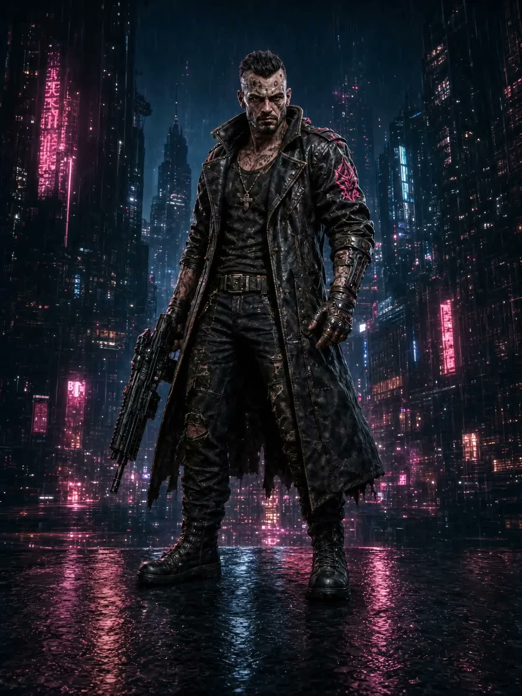
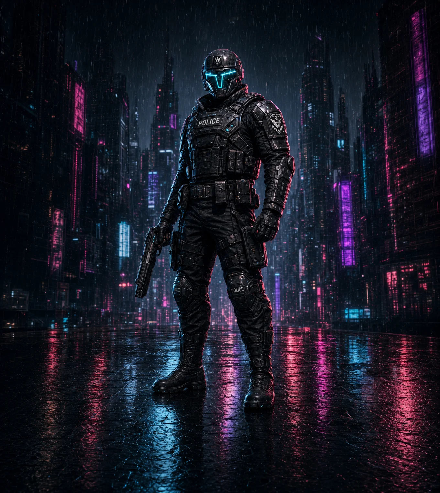
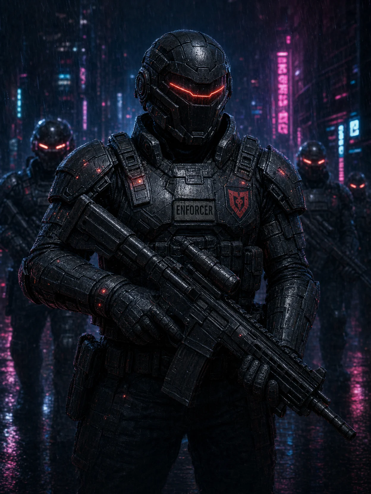

The Syndicate
MERCY IS WEAKNESS
Street power built on blood debts and kept by enforcers like Asher Kraid. They rule the lower districts by respect earned the hard way.
OPEN DOSSIER
Twenty-four syndicates, one corporate army, and the last honest badges in Neon Empire. Every faction wants the same streets—and every one of them will deal with you before they bury you. Choose your allies carefully.

Street power built on blood debts and kept by enforcers like Asher Kraid. They rule the lower districts by respect earned the hard way.

Armored operatives of the Police Force, deployed where justice demands. The last line between order and anarchy in the high-risk sectors.

The iron fist of corporate rule. Armed, armored, and loyal to the regime, they hold the lawless zones by any means necessary.